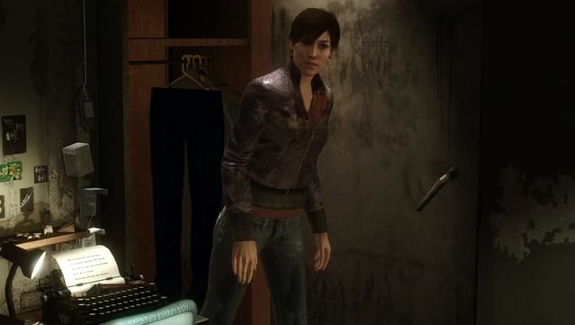
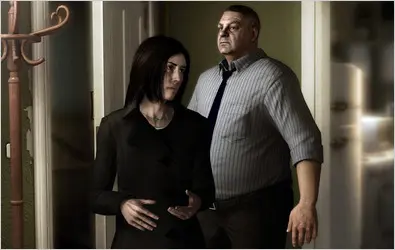

I wouldn't recommend unless it's really cheap and you're into this sort of thing.
It's basically a B-Movie about a serial killer with twists and plot points that seem contrived.
The story is ok but never had me hooked. It does have different outcomes depending on what you do and if you mess up the quick time events but the events seem to not effect the story much at all until the end.
The graphics are a bit dated and the animations kept messing up however I did like the atmosphere. Taking your time to walk around various scenes as different characters whilst the heavy rain pours down is quite relaxing.
The gameplay is pretty poor, its just QTEs and point and click adventure type stuff but with awkward controls. Honestly I would have prefered to have no QTEs and just watch the action scenes instead of having to focus on the button prompts and miss out on the actual scene being played. The gimic of certain control inputs to do basic actions like open a door is just that, a gimic.
This review has turned out pretty negative but it's not that bad of a game. I got it for £2 but I don't feel like it was worth the 8hrs I invested into it to reach the end. I think this game will absolutely appeal to some people though.

